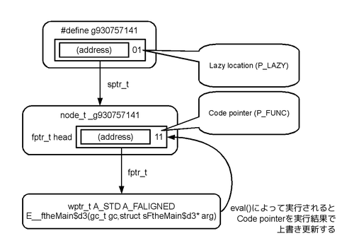
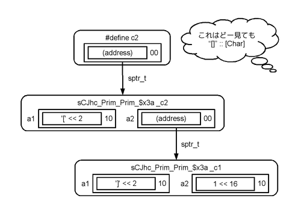
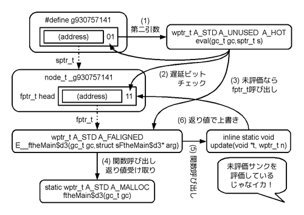

Jhc compile pipeline: Grin => C (code example)
Table of contents
- ダンプ解析 (例による理解)
- 1. Caf: v-930757141
- 2. Func: b_main :: () -> ()
- 3. Func: fW@.fJhc.Inst.Show.showWord :: (bits32,I) -> (N)
- 4. Func: fJhc.Show.shows :: (I,I) -> (N)
- 5. Func: fR@.fJhc.Show.11_showl :: (I,N) -> (N)
- 6. Func: ftheMain$2 :: (I,I) -> (N)
- 7. Func: fR@.fJhc.Basics.++ :: (I,N) -> (N)
- 8. Func: ftheMain$3 :: () -> (N)
- 9. Func: fR@.fJhc.Basics.zipWith :: (I,I) -> (N)
- 10. Func: fW@.fR@.fJhc.List.387_f :: (bits32,I) -> (N)
- 11. Func: ftheMain :: () -> ()
- Grin由来ではないC言語コード
お待ちかねでゲソ! jhcのコンパイルパイプラインを詳細に調査してみようと思うでゲッソ。
$ cat Fib.hs
fibonacci :: [Int]
fibonacci = 1:1:zipWith (+) fibonacci (tail fibonacci)
main :: IO ()
main = print $ take 40 fibonacci
$ make
sh jhc_dump_code.sh Fib.hs > jhc_dump_code.log 2>&1
dot -Tpng hs.out_grin.dot > hs.out_grin.dot.pngこの簡単なフィボナッチ数列を出力するだけのプログラムをjhcでコンパイルして、 そのダンプ を取ったでゲソ。 今回はその中でイカの2つを比較することで、GrinからC言語への変換がどのようになっているのか調査してみようと思うでゲッソ。
- hs.out_final.grin - C言語への変換直前のGrin
- hs.out_code.c - 最終的なC言語ソース
一応、上記のダンプが所望のものかどうかjhc本体のソースコードでチェックしてきるでゲソ。
-- jhc/src/Grin/Main.hs
compileToGrin prog = do
stats <- Stats.new
putProgressLn "Converting to Grin..."
-- snip --
x <- storeAnalyze x
=> dumpFinalGrin x
writeFile (outputName ++ "_grin.dot") (graphGrin grin)
dumpGrin "final" grin
compileGrinToC xうん。ちゃんとC言語に変換する直前のダンプでゲソ。 先のhs.out_final.grinを見てみるとグローバルから辿れる要素はイカのようでゲソ。
- Caf: v-930757141
- Func: b_main :: () -> ()
- Func: fW@.fJhc.Inst.Show.showWord :: (bits32,I) -> (N)
- Func: fJhc.Show.shows :: (I,I) -> (N)
- Func: fR@.fJhc.Show.11_showl :: (I,N) -> (N)
- Func: ftheMain$2 :: (I,I) -> (N)
- Func: fR@.fJhc.Basics.++ :: (I,N) -> (N)
- Func: ftheMain$3 :: () -> (N)
- Func: fR@.fJhc.Basics.zipWith :: (I,I) -> (N)
- Func: fW@.fR@.fJhc.List.387_f :: (bits32,I) -> (N)
- Func: ftheMain :: () -> ()
また、上記の関数は-dgrin-graphが吐いた図によるとイカのような関係にあるらしいでゲソ。

これらがどのようにC言語に写像されているか、 また逆にC言語ソースコードで上記由来ではない部分が存在するかどうかチェックしてみなイカ？
ダンプ解析 (例による理解)
1. Caf: v-930757141
/* C言語 */
typedef struct fptr * fptr_t;
typedef struct sptr * sptr_t;
typedef struct node {
fptr_t head;
sptr_t rest[];
} A_MAYALIAS node_t;
#define P_WHNF 0x0
#define P_LAZY 0x1
#define P_VALUE 0x2
#define P_FUNC 0x3
#define TO_SPTR_C(t,x) (typeof (x))((uintptr_t)(x) + (t))
// attach a ptype to a smart pointer, suitable for use by constant initialializers
#define TO_FPTR(fn) TO_SPTR_C(P_FUNC,(fptr_t)fn)
#define MKLAZY_C(fn) TO_SPTR_C(P_LAZY,(sptr_t)fn)
/* CAFS */
/* v-930757141 = (FtheMain$3)*/
static node_t _g930757141 = { .head = TO_FPTR(&E__ftheMain$d3) };
#define g930757141 (MKLAZY_C(&_g930757141))これを図にまとめると、イカのようになるでゲソ。 CAF(Constant Applicative Form) というのは 「一度実行したら、その結果をメモ化して使いまわせるもの」のことでゲソ。 1 ということはg930757141というのは未評価のサンクで、 このサンクの値を評価して確定させるためにはCode pointerの先にある E__ftheMain$d3()関数を実行する必要があるということが予想できるじゃなイカ。

ではこのサンクg930757141はどのように使われるんでゲソ？
まずnh_stuff配列から参照されているでゲソ。 これはGCルートのようでゲソ。 グローバルから見えるサンクは当然解放することができないので、 GCルートになるはずでゲソ。
ftheMain
=> eval(gc,g930757141)
void *ds = FROM_SPTR(g930757141); // (uintptr_t)(x) & ~0x3)
sptr_t h = (sptr_t)(GETHEAD(ds)); // ((node_t *)(x))->head
eval_fn fn = (eval_fn)FROM_SPTR(h);
=> wptr_t r = E__ftheMain$d3(gc,_g930757141); // (*fn)(gc,NODEP(ds));
=> wptr_t r2 = ftheMain$d3(gc);
=> return fR$__fJhc_Basics_$pp(gc,c2,SET_RAW_TAG(CJhc_Prim_Prim_$BE));
=> update(_g930757141,r2);
GETHEAD(_g930757141) = (fptr_t)r2;
gc_add_root(gc,(sptr_t)r2);
return r2;
return r;さらg930757141はevel()関数を通して評価され、 最終的に_g930757141のheadメンバーをftheMain$d3()関数の実行結果で上書きしているでゲソ。 結局eval()関数を通したことで、g930757141は未評価サンクから評価済みサンクに変化したんでゲソ。 このeval()関数、場合によってはさらにその子供のサンクを評価するために一度実行に入ると長い時間滞留する可能性があるでゲソ。 jhcのコンパイル結果にeval()を使っている箇所があったら注意して確認する必要があるということになるでゲソ。
2. Func: b_main :: () -> ()
/* C言語 */
void
_amain(void)
{
return (void)b__main(saved_gc);
}
static void A_STD
b__main(gc_t gc)
{
return ftheMain(gc);
}うむ。これはなんかそのままでゲソ。 あえて違うところを挙げるとするならsaved_gcを引数で取り回すということでゲソ。 saved_gcはjgcの機能なので、別のGCを選択した場合には当然この出力も変化するはずでゲソ。
3. Func: fW@.fJhc.Inst.Show.showWord :: (bits32,I) -> (N)
-- Grin --
fW@.fJhc.Inst.Show.showWord :: (bits32,I) -> (N)
fW@.fJhc.Inst.Show.showWord w1540496947 ni1826240557 = do
let
fW@.fR@.fJhc.Inst.Show.showWord w80100072 ni196335308 = do
w40405746 <- w80100072 / 10
w253468956 <- w80100072 % 10
bm124940226 <- (bits<max>)ConvOp Zx bits32 w253468956
w132127022 <- (bits32)ConvOp Lobits bits<max> bm124940226
w26031830 <- 48 + w132127022
w260152044 <- (bits32)ConvOp B2B bits32 w26031830
withRoots(ni196335308)
nd122 <- dstore (CJhc.Type.Basic.Char w260152044)
ni55102202 <- demote nd122
case w40405746 of
0 -> withRoots(ni55102202)
dstore (CJhc.Prim.Prim.: ni55102202 ni196335308)
w0 -> withRoots(ni55102202)
nd15 <- dstore (CJhc.Prim.Prim.: ni55102202 ni196335308)
ni1829124143 <- demote nd15
fW@.fR@.fJhc.Inst.Show.showWord w40405746 ni1829124143
in
fW@.fR@.fJhc.Inst.Show.showWord w1540496947 ni1826240557/* C言語 */
static wptr_t A_STD A_MALLOC
fW$__fJhc_Inst_Show_showWord(gc_t gc,uint32_t v1540496947,sptr_t v1826240557)
{
sptr_t v196335308;
uint32_t v80100072;
// let fW@.fR@.fJhc.Inst.Show.showWord w80100072 ni196335308 = do
// fW@.fR@.fJhc.Inst.Show.showWord w1540496947 ni1826240557
v80100072 = v1540496947;
v196335308 = v1826240557;
fW$__fR$__fJhc_Inst_Show_showWord__2:;
{ uint32_t v40405746 = (v80100072 / 10); // w40405746 <- w80100072 / 10
uint32_t v253468956 = (v80100072 % 10); // w253468956 <- w80100072 % 10
uintmax_t v124940226 = ((uintmax_t)v253468956); // bm124940226 <- (bits<max>)ConvOp Zx bits32 w253468956
uint32_t v132127022 = ((uint32_t)v124940226); // w132127022 <- (bits32)ConvOp Lobits bits<max> bm124940226
uint32_t v26031830 = (48 + v132127022); // w26031830 <- 48 + w132127022
uint32_t v260152044 = v26031830; // w260152044 <- (bits32)ConvOp B2B bits32 w26031830
{ gc_frame0(gc,1,v196335308);
wptr_t v122 = RAW_SET_UF(v260152044); // nd122 <- dstore (CJhc.Type.Basic.Char w260152044)
sptr_t v55102202 = demote(v122); // ni55102202 <- demote nd122
if (0 == v40405746) { // case w40405746 of 0 ->
{ gc_frame0(gc,1,v55102202);
wptr_t x3 = s_alloc(gc,cCJhc_Prim_Prim_$x3a); // dstore (CJhc.Prim.Prim.: ni55102202 ni196335308)
((struct sCJhc_Prim_Prim_$x3a*)x3)->a1 = v55102202;
((struct sCJhc_Prim_Prim_$x3a*)x3)->a2 = v196335308;
return x3;
}
} else { // w0 ->
{ gc_frame0(gc,1,v55102202);
wptr_t x4 = s_alloc(gc,cCJhc_Prim_Prim_$x3a); // nd15 <- dstore (CJhc.Prim.Prim.: ni55102202 ni196335308)
((struct sCJhc_Prim_Prim_$x3a*)x4)->a1 = v55102202;
((struct sCJhc_Prim_Prim_$x3a*)x4)->a2 = v196335308;
wptr_t v15 = x4;
sptr_t v1829124143 = demote(v15); // ni1829124143 <- demote nd15
v80100072 = v40405746; // fW@.fR@.fJhc.Inst.Show.showWord w40405746 ni1829124143
v196335308 = v1829124143;
goto fW$__fR$__fJhc_Inst_Show_showWord__2;
}
}
}
}
}C言語側にGrinコード断片をコメントで入れてみたでゲソ。 だいたい1対1に対応が取れているじゃなイカ。 ここではGrinとC言語の違いに着目して、そのしくみを詳しく見てみるでゲソ。
まず第一にdstore (CJhc.Type.Basic.Char,x)がRAW_SET_UF(x)になることがあるでゲソ。 このRAW_SET_UF()はイカのような定義で、即値のWHNFに変換してくれるでゲソ。 CJhc.Type.Basic.Charは即値なので、RAW_SET_UF()を使ってスマートポインタに埋め込まれるんじゃなイカ。
ところがdstore (CJhc.Prim.Prim.: x y) のような場合にはイカのようにs_alloc()でヒープへのスマートポインタを作って、 格納するでゲソ。 これはHaskellの(:)演算子を思いうかべればすぐわかるでゲソ。 (:)演算子は2つの要素をconsし、 そのconsした結果がstruct sCJhc_Prim_Prim_$x3aなんでゲソ。 つまりconsする旅にヒープの領域を消費するということでゲソ。
struct sCJhc_Prim_Prim_$x3a {
sptr_t a1;
sptr_t a2;
};
wptr_t x4 = s_alloc(gc,cCJhc_Prim_Prim_$x3a);
((struct sCJhc_Prim_Prim_$x3a*)x4)->a1 = x;
((struct sCJhc_Prim_Prim_$x3a*)x4)->a2 = y;最後にfW@.fR@.fJhc.Inst.Show.showWord関数の再帰がgotoループになっているでゲソ。 たまたまこの関数の例はすぐにループ化できる再帰だから良かったでゲソ。 しかし、原理的に全ての再帰がループ化されるのカ？少し不安でゲソ…
4. Func: fJhc.Show.shows :: (I,I) -> (N)
-- Grin --
fJhc.Show.shows :: (I,I) -> (N)
fJhc.Show.shows ni29375120 ni44000678 = do
withRoots(ni44000678)
nd100038 <- eval ni29375120
(CJhc.Type.Word.Int w216085094) <- return nd100038
h100040 <- 0 `Gt` w216085094
case h100040 of
1 -> do
w196289068 <- (bits32)Neg w216085094
bm253468954 <- (bits<max>)ConvOp Sx bits32 w196289068
w124235152 <- (bits32)ConvOp Lobits bits<max> bm253468954
ni244126258 <- istore (FW@.fJhc.Inst.Show.showWord w124235152 ni44000678)
withRoots(ni244126258)
dstore (CJhc.Prim.Prim.: &(CJhc.Type.Basic.Char 45) ni244126258)
0 -> do
bm220263214 <- (bits<max>)ConvOp Sx bits32 w216085094
w110207578 <- (bits32)ConvOp Lobits bits<max> bm220263214
fW@.fJhc.Inst.Show.showWord w110207578 ni44000678/* C言語 */
static wptr_t A_STD A_MALLOC
fJhc_Show_shows(gc_t gc,sptr_t v29375120,sptr_t v44000678)
{
{ uint32_t v216085094;
gc_frame0(gc,1,v44000678); // withRoots(ni44000678)
wptr_t v100038 = eval(gc,v29375120); // nd100038 <- eval ni29375120
v216085094 = ((struct sCJhc_Type_Word_Int*)v100038)->a1; // (CJhc.Type.Word.Int w216085094) <- return nd100038
uint16_t v100040 = (((int32_t)0) > ((int32_t)v216085094)); // h100040 <- 0 `Gt` w216085094
if (0 == v100040) { // case h100040 of 0 -> do
uintmax_t v220263214 = ((intmax_t)((int32_t)v216085094)); // bm220263214 <- (bits<max>)ConvOp Sx bits32 w216085094
uint32_t v110207578 = ((uint32_t)v220263214); // w110207578 <- (bits32)ConvOp Lobits bits<max> bm220263214
return fW$__fJhc_Inst_Show_showWord(gc,v110207578,v44000678); // fW@.fJhc.Inst.Show.showWord w110207578 ni44000678
} else { // 1 -> do
/* 1 */
assert(1 == v100040);
uint32_t v196289068 = (-((int32_t)v216085094)); // w196289068 <- (bits32)Neg w216085094
uintmax_t v253468954 = ((intmax_t)((int32_t)v196289068)); // bm253468954 <- (bits<max>)ConvOp Sx bits32 w196289068
uint32_t v124235152 = ((uint32_t)v253468954); // w124235152 <- (bits32)ConvOp Lobits bits<max> bm253468954
sptr_t x5 = s_alloc(gc,cFW$__fJhc_Inst_Show_showWord); // ni244126258 <- istore (FW@.fJhc.Inst.Show.showWord w124235152 ni44000678)
((struct sFW$__fJhc_Inst_Show_showWord*)x5)->head = TO_FPTR(&E__fW$__fJhc_Inst_Show_showWord);
((struct sFW$__fJhc_Inst_Show_showWord*)x5)->a1 = v124235152;
((struct sFW$__fJhc_Inst_Show_showWord*)x5)->a2 = v44000678;
sptr_t v244126258 = MKLAZY(x5);
{ gc_frame0(gc,1,v244126258); // withRoots(ni244126258)
wptr_t x6 = s_alloc(gc,cCJhc_Prim_Prim_$x3a); // dstore (CJhc.Prim.Prim.: &(CJhc.Type.Basic.Char 45) ni244126258)
((struct sCJhc_Prim_Prim_$x3a*)x6)->a1 = ((sptr_t)RAW_SET_UF('-'));
((struct sCJhc_Prim_Prim_$x3a*)x6)->a2 = v244126258;
return x6;
}
}
}
}これもほぼ1対1に対応しているでゲソが、唯一の例外が istore (FW@.fJhc.Inst.Show.showWord x y) がs_alloc()によるヒープの確保に化けることでゲソ。
struct sFW$__fJhc_Inst_Show_showWord {
fptr_t head;
sptr_t a2;
uint32_t a1;
};
sptr_t x5 = s_alloc(gc,cFW$__fJhc_Inst_Show_showWord);
((struct sFW$__fJhc_Inst_Show_showWord*)x5)->head = TO_FPTR(&E__fW$__fJhc_Inst_Show_showWord);
((struct sFW$__fJhc_Inst_Show_showWord*)x5)->a1 = x;
((struct sFW$__fJhc_Inst_Show_showWord*)x5)->a2 = y;
sptr_t v244126258 = MKLAZY(x5);この謎はjhcのjhcライブラリのソース見れば理解できるでゲソ。 showWord関数はイカのように通常のLazyな関数じゃなイカ。 ということはここでは未評価サンクだけ作り後で誰かがforceしてくれるのを待てばいいんでゲソ。 ここで作成する未評価サンクの実体がstruct sFW$__fJhc_Inst_Show_showWordで、 やはりヒープに確保されるでゲソ。
-- jhc/lib/jhc/Jhc/Inst/Show.hs
showWord :: Word -> String -> String
showWord w rest = w `seq` case quotRem w 10 of
(n',d) -> n' `seq` d `seq` rest' `seq` if n' == 0 then rest' else showWord n' rest'
where rest' = chr (fromIntegral d + ord '0') : rest5. Func: fR@.fJhc.Show.11_showl :: (I,N) -> (N)
-- Grin --
fR@.fJhc.Show.11_showl :: (I,N) -> (N)
fR@.fJhc.Show.11_showl ni108431528 nd267777212 = do
ni267777293 <- demote nd267777212
withRoots(nd267777212,ni267777293)
nd100036 <- eval ni108431528
(ni126,ni95) <- case nd100036 of
(CJhc.Prim.Prim.: ni26 ni67) -> withRoots(ni26,ni67)
ni110947984 <- istore (FR@.fJhc.Show.11_showl ni67 nd267777212)
withRoots(ni110947984)
ni215884490 <- istore (FJhc.Show.shows ni26 ni110947984)
return (&(CJhc.Type.Basic.Char 44),ni215884490)
[] -> return (&(CJhc.Type.Basic.Char 93),ni267777293)
withRoots(ni95,ni126)
dstore (CJhc.Prim.Prim.: ni126 ni95)/* C言語 */
static wptr_t A_STD A_MALLOC
fR$__fJhc_Show_11__showl(gc_t gc,sptr_t v108431528,wptr_t v267777212)
{
sptr_t v267777293 = demote(v267777212); // ni267777293 <- demote nd267777212
{ sptr_t v126;
sptr_t v95;
struct tup1 x7;
gc_frame0(gc,2,v267777212,v267777293); // withRoots(nd267777212,ni267777293)
wptr_t v100036 = eval(gc,v108431528); // nd100036 <- eval ni108431528
if (SET_RAW_TAG(CJhc_Prim_Prim_$BE) == v100036) { // case nd100036 of [] ->
x7.t0 = ((sptr_t)RAW_SET_UF(']')); // return (&(CJhc.Type.Basic.Char 93),ni267777293)
x7.t1 = v267777293;
} else { // (CJhc.Prim.Prim.: ni26 ni67) ->
sptr_t v26;
sptr_t v67;
/* ("CJhc.Prim.Prim.:" ni26 ni67) パターンマッチ */
v26 = ((struct sCJhc_Prim_Prim_$x3a*)v100036)->a1;
v67 = ((struct sCJhc_Prim_Prim_$x3a*)v100036)->a2;
{ gc_frame0(gc,2,v26,v67); // withRoots(ni26,ni67)
sptr_t x8 = s_alloc(gc,cFR$__fJhc_Show_11__showl); // ni110947984 <- istore (FR@.fJhc.Show.11_showl ni67 nd267777212)
((struct sFR$__fJhc_Show_11__showl*)x8)->head = TO_FPTR(&E__fR$__fJhc_Show_11__showl);
((struct sFR$__fJhc_Show_11__showl*)x8)->a1 = v67;
((struct sFR$__fJhc_Show_11__showl*)x8)->a2 = v267777212;
sptr_t v110947984 = MKLAZY(x8);
{ gc_frame0(gc,1,v110947984); // withRoots(ni110947984)
sptr_t x9 = s_alloc(gc,cFJhc_Show_shows); // ni215884490 <- istore (FJhc.Show.shows ni26 ni110947984)
((struct sFJhc_Show_shows*)x9)->head = TO_FPTR(&E__fJhc_Show_shows);
((struct sFJhc_Show_shows*)x9)->a1 = v26;
((struct sFJhc_Show_shows*)x9)->a2 = v110947984;
sptr_t v215884490 = MKLAZY(x9);
x7.t0 = ((sptr_t)RAW_SET_UF(',')); // return (&(CJhc.Type.Basic.Char 44),ni215884490)
x7.t1 = v215884490;
}
}
}
v126 = x7.t0; // (ni126,ni95) <-
v95 = x7.t1;
{ gc_frame0(gc,2,v95,v126); // withRoots(ni95,ni126)
wptr_t x10 = s_alloc(gc,cCJhc_Prim_Prim_$x3a); // dstore (CJhc.Prim.Prim.: ni126 ni95)
((struct sCJhc_Prim_Prim_$x3a*)x10)->a1 = v126;
((struct sCJhc_Prim_Prim_$x3a*)x10)->a2 = v95;
return x10;
}
}
}ここまで来るとほぼこれまで仕入れた知識で読めるでゲソ! 新しく出てきた表現をあえて挙げるならタプルでゲソ。
これはもう見たままでゲソ。タプルじゃなイカ。 ところでなんでいきなりタプルを使うことになったんでゲソ？
この関数はjhcライブラリのshowList関数の中にあるshowlローカル関数に由来しているでゲソ。 どうもShowS型の合成を (文字,サンク) というタプルでの表現に変換しているようじゃなイカ。 コンパイルパイプラインの最適化のどこでこの変換が行なわれるのか興味が出てきたでゲソ。
-- jhc/lib/jhc/Jhc/Show.hs
type ShowS = String -> String
class Show a where
-- snip --
showList :: [a] -> ShowS
-- snip --
showList [] = showString "[]"
showList (x:xs) = showChar '[' . shows x . showl xs
where showl [] = showChar ']'
showl (x:xs) = showChar ',' . shows x .
showl xs6. Func: ftheMain$2 :: (I,I) -> (N)
-- Grin --
ftheMain$2 :: (I,I) -> (N)
ftheMain$2 ni38 ni42 = do
withRoots(ni42)
nd100032 <- eval ni38
withRoots(nd100032)
nd100092 <- eval ni42
(CJhc.Type.Word.Int w239029634) <- return nd100032
(CJhc.Type.Word.Int w242159974) <- return nd100092
w215350916 <- w239029634 + w242159974
dstore (CJhc.Type.Word.Int w215350916)/* C言語 */
static wptr_t A_STD A_MALLOC
ftheMain$d2(gc_t gc,sptr_t v38,sptr_t v42)
{
{ gc_frame0(gc,1,v42); // withRoots(ni42)
wptr_t v100032 = eval(gc,v38); // nd100032 <- eval ni38
{ uint32_t v239029634;
uint32_t v242159974;
gc_frame0(gc,1,v100032); // withRoots(nd100032)
wptr_t v100092 = eval(gc,v42); // nd100092 <- eval ni42
v239029634 = ((struct sCJhc_Type_Word_Int*)v100032)->a1; // (CJhc.Type.Word.Int w239029634) <- return nd100032
v242159974 = ((struct sCJhc_Type_Word_Int*)v100092)->a1; // (CJhc.Type.Word.Int w242159974) <- return nd100092
uint32_t v215350916 = (v239029634 + v242159974); // w215350916 <- w239029634 + w242159974
wptr_t x11 = s_alloc(gc,cCJhc_Type_Word_Int); // dstore (CJhc.Type.Word.Int w215350916)
((struct sCJhc_Type_Word_Int*)x11)->a1 = v215350916;
return x11;
}
}
}ここではじめて“+”演算子を使っているでゲソ。 中間に変数をはさんでいるのでわかりにくいでゲソが、全部展開するとイカのような処理のはずでゲソ。 jhcではプリミティブ型が則、C言語のプリミティブ型に落ちるので、こんな芸当ができるんでゲソ!
struct sCJhc_Type_Word_Int {
uint32_t a1;
};
((struct sCJhc_Type_Word_Int*)x11)->a1 =
((struct sCJhc_Type_Word_Int*)v100032)->a1 + ((struct sCJhc_Type_Word_Int*)v100092)->a1;7. Func: fR@.fJhc.Basics.++ :: (I,N) -> (N)
-- Grin --
fR@.fJhc.Basics.++ :: (I,N) -> (N)
fR@.fJhc.Basics.++ ni29534742 nd29534740 = do
withRoots(nd29534740)
nd100000 <- eval ni29534742
case nd100000 of
(CJhc.Prim.Prim.: ni106 ni108) -> withRoots(ni106,ni108)
ni69834446 <- istore (FR@.fJhc.Basics.++ ni108 nd29534740)
withRoots(ni69834446)
dstore (CJhc.Prim.Prim.: ni106 ni69834446)
[] -> return nd29534740/* C言語 */
static wptr_t A_STD A_MALLOC
fR$__fJhc_Basics_$pp(gc_t gc,sptr_t v29534742,wptr_t v29534740)
{
{ gc_frame0(gc,1,v29534740); // withRoots(nd29534740)
wptr_t v100000 = eval(gc,v29534742); // nd100000 <- eval ni29534742
if (SET_RAW_TAG(CJhc_Prim_Prim_$BE) == v100000) { // case nd100000 of [] ->
return v29534740; // return nd29534740
} else { // (CJhc.Prim.Prim.: ni106 ni108) ->
sptr_t v106;
sptr_t v108;
/* ("CJhc.Prim.Prim.:" ni106 ni108) パターンマッチ */
v106 = ((struct sCJhc_Prim_Prim_$x3a*)v100000)->a1;
v108 = ((struct sCJhc_Prim_Prim_$x3a*)v100000)->a2;
{ gc_frame0(gc,2,v106,v108); // withRoots(ni106,ni108)
sptr_t x12 = s_alloc(gc,cFR$__fJhc_Basics_$pp); // ni69834446 <- istore (FR@.fJhc.Basics.++ ni108 nd29534740)
((struct sFR$__fJhc_Basics_$pp*)x12)->head = TO_FPTR(&E__fR$__fJhc_Basics_$pp);
((struct sFR$__fJhc_Basics_$pp*)x12)->a1 = v108;
((struct sFR$__fJhc_Basics_$pp*)x12)->a2 = v29534740;
sptr_t v69834446 = MKLAZY(x12);
{ gc_frame0(gc,1,v69834446); // withRoots(ni69834446)
wptr_t x13 = s_alloc(gc,cCJhc_Prim_Prim_$x3a); // dstore (CJhc.Prim.Prim.: ni106 ni69834446)
((struct sCJhc_Prim_Prim_$x3a*)x13)->a1 = v106;
((struct sCJhc_Prim_Prim_$x3a*)x13)->a2 = v69834446;
return x13;
}
}
}
}
}この関数はこれまでの調査結果で理解できるでゲソ。
8. Func: ftheMain$3 :: () -> (N)
/* C言語 */
struct sCJhc_Prim_Prim_$x3a {
sptr_t a1;
sptr_t a2;
};
#define RAW_SET_UF(n) ((wptr_t)(((uintptr_t)(n) << 2) | P_VALUE))
#define RAW_SET_16(w) (wptr_t)(((uintptr_t)(w) << 16) | P_VALUE)
#define SET_RAW_TAG(x) RAW_SET_16(x)
enum {
CJhc_Prim_Prim_$BE = 1,
CJhc_Prim_Prim_$LR = 0,
CJhc_Prim_Prim_$x3a = 0,
CJhc_Type_Basic_Char = 0,
CJhc_Type_Word_Int = 0
};
/* (HcNode CJhc.Prim.Prim.: [Left &("CJhc.Type.Basic.Char" 93),Left &("CJhc.Prim.Prim.[]")],1) */
static const struct sCJhc_Prim_Prim_$x3a _c1 = {.a1 = (sptr_t)RAW_SET_UF(']'), .a2 = (sptr_t)SET_RAW_TAG(CJhc_Prim_Prim_$BE)};
#define c1 (TO_SPTR_C(P_WHNF, (sptr_t)&_c1))
/* (HcNode CJhc.Prim.Prim.: [Left &("CJhc.Type.Basic.Char" 91),Right 1],2) */
static const struct sCJhc_Prim_Prim_$x3a _c2 = {.a1 = (sptr_t)RAW_SET_UF('['), .a2 = c1};
#define c2 (TO_SPTR_C(P_WHNF, (sptr_t)&_c2))
static wptr_t A_STD A_MALLOC
ftheMain$d3(gc_t gc)
{
return fR$__fJhc_Basics_$pp(gc,c2,SET_RAW_TAG(CJhc_Prim_Prim_$BE));
}いきなりc2というグローバル変数が出てきたじゃなイカ。これはなんでゲソ？

なるほどたしかに fR@.fJhc.Basics.++ &“[]” [] とあったので“[]”という文字列が欲しかったんでゲソね。
9. Func: fR@.fJhc.Basics.zipWith :: (I,I) -> (N)
-- Grin --
fR@.fJhc.Basics.zipWith :: (I,I) -> (N)
fR@.fJhc.Basics.zipWith ni182639120 ni132127014 = do
withRoots(ni132127014)
nd100028 <- eval ni182639120
case nd100028 of
(CJhc.Prim.Prim.: ni40405740 ni40) -> withRoots(ni40,ni40405740)
nd100030 <- eval ni132127014
case nd100030 of
(CJhc.Prim.Prim.: ni194635132 ni116) -> withRoots(ni116,ni194635132)
ni248061794 <- istore (FR@.fJhc.Basics.zipWith ni40 ni116)
withRoots(ni248061794)
ni229109160 <- istore (FtheMain$2 ni40405740 ni194635132)
withRoots(ni229109160)
dstore (CJhc.Prim.Prim.: ni229109160 ni248061794)
[] -> return []
[] -> return []/* C言語 */
static wptr_t A_STD A_MALLOC
fR$__fJhc_Basics_zipWith(gc_t gc,sptr_t v182639120,sptr_t v132127014)
{
{ gc_frame0(gc,1,v132127014); // withRoots(ni132127014)
wptr_t v100028 = eval(gc,v182639120); // nd100028 <- eval ni182639120
if (SET_RAW_TAG(CJhc_Prim_Prim_$BE) == v100028) { // case nd100028 of [] ->
return v100028; // return []
} else { // (CJhc.Prim.Prim.: ni40405740 ni40) ->
sptr_t v40;
sptr_t v40405740;
/* ("CJhc.Prim.Prim.:" ni40405740 ni40) パターンマッチ */
v40405740 = ((struct sCJhc_Prim_Prim_$x3a*)v100028)->a1;
v40 = ((struct sCJhc_Prim_Prim_$x3a*)v100028)->a2;
{ gc_frame0(gc,2,v40,v40405740); // withRoots(ni40,ni40405740)
wptr_t v100030 = eval(gc,v132127014); // nd100030 <- eval ni132127014
if (SET_RAW_TAG(CJhc_Prim_Prim_$BE) == v100030) { // case nd100030 of [] ->
return v100030; // return []
} else { // (CJhc.Prim.Prim.: ni194635132 ni116) ->
sptr_t v116;
sptr_t v194635132;
/* ("CJhc.Prim.Prim.:" ni194635132 ni116) パターンマッチ */
v194635132 = ((struct sCJhc_Prim_Prim_$x3a*)v100030)->a1;
v116 = ((struct sCJhc_Prim_Prim_$x3a*)v100030)->a2;
{ gc_frame0(gc,2,v116,v194635132); // withRoots(ni116,ni194635132)
sptr_t x14 = s_alloc(gc,cFR$__fJhc_Basics_zipWith); // ni248061794 <- istore (FR@.fJhc.Basics.zipWith ni40 ni116)
((struct sFR$__fJhc_Basics_zipWith*)x14)->head = TO_FPTR(&E__fR$__fJhc_Basics_zipWith);
((struct sFR$__fJhc_Basics_zipWith*)x14)->a1 = v40;
((struct sFR$__fJhc_Basics_zipWith*)x14)->a2 = v116;
sptr_t v248061794 = MKLAZY(x14);
{ gc_frame0(gc,1,v248061794); // withRoots(ni248061794)
sptr_t x15 = s_alloc(gc,cFtheMain$d2); // ni229109160 <- istore (FtheMain$2 ni40405740 ni194635132)
((struct sFtheMain$d2*)x15)->head = TO_FPTR(&E__ftheMain$d2);
((struct sFtheMain$d2*)x15)->a1 = v40405740;
((struct sFtheMain$d2*)x15)->a2 = v194635132;
sptr_t v229109160 = MKLAZY(x15);
{ gc_frame0(gc,1,v229109160); // withRoots(ni229109160)
wptr_t x16 = s_alloc(gc,cCJhc_Prim_Prim_$x3a); // dstore (CJhc.Prim.Prim.: ni229109160 ni248061794)
((struct sCJhc_Prim_Prim_$x3a*)x16)->a1 = v229109160;
((struct sCJhc_Prim_Prim_$x3a*)x16)->a2 = v248061794;
return x16;
}
}
}
}
}
}
}
}うむ。これも今の知識で読めるでゲソ。次の人!っでゲッソ。
10. Func: fW@.fR@.fJhc.List.387_f :: (bits32,I) -> (N)
-- Grin --
fW@.fR@.fJhc.List.387_f :: (bits32,I) -> (N)
fW@.fR@.fJhc.List.387_f w115160438 ni124940224 = do
h100024 <- 0 `Gte` w115160438
case h100024 of
1 -> return []
0 -> do
nd100026 <- eval ni124940224
case nd100026 of
(CJhc.Prim.Prim.: ni304 ni306) -> do
w194508206 <- w115160438 - 1
withRoots(ni304,ni306)
ni131889104 <- istore (FW@.fR@.fJhc.List.387_f w194508206 ni306)
withRoots(ni131889104)
dstore (CJhc.Prim.Prim.: ni304 ni131889104)
[] -> return []/* C言語 */
static wptr_t A_STD A_MALLOC
fW$__fR$__fJhc_List_387__f(gc_t gc,uint32_t v115160438,sptr_t v124940224)
{
uint16_t v100024 = (((int32_t)0) >= ((int32_t)v115160438)); // h100024 <- 0 `Gte` w115160438
if (0 == v100024) { // case h100024 of 0 -> do
wptr_t v100026 = eval(gc,v124940224); // nd100026 <- eval ni124940224
if (SET_RAW_TAG(CJhc_Prim_Prim_$BE) == v100026) { // case nd100026 of [] ->
return v100026; // return []
} else { // (CJhc.Prim.Prim.: ni304 ni306) -> do
sptr_t v304;
sptr_t v306;
/* ("CJhc.Prim.Prim.:" ni304 ni306) パターンマッチ */
v304 = ((struct sCJhc_Prim_Prim_$x3a*)v100026)->a1;
v306 = ((struct sCJhc_Prim_Prim_$x3a*)v100026)->a2;
uint32_t v194508206 = (v115160438 - 1); // w194508206 <- w115160438 - 1
{ gc_frame0(gc,2,v304,v306); // withRoots(ni304,ni306)
sptr_t x17 = s_alloc(gc,cFW$__fR$__fJhc_List_387__f); // ni131889104 <- istore (FW@.fR@.fJhc.List.387_f w194508206 ni306)
((struct sFW$__fR$__fJhc_List_387__f*)x17)->head = TO_FPTR(&E__fW$__fR$__fJhc_List_387__f);
((struct sFW$__fR$__fJhc_List_387__f*)x17)->a1 = v194508206;
((struct sFW$__fR$__fJhc_List_387__f*)x17)->a2 = v306;
sptr_t v131889104 = MKLAZY(x17);
{ gc_frame0(gc,1,v131889104); // withRoots(ni131889104)
wptr_t x18 = s_alloc(gc,cCJhc_Prim_Prim_$x3a); // dstore (CJhc.Prim.Prim.: ni304 ni131889104)
((struct sCJhc_Prim_Prim_$x3a*)x18)->a1 = v304;
((struct sCJhc_Prim_Prim_$x3a*)x18)->a2 = v131889104;
return x18;
}
}
}
} else { // 1 ->
/* 1 */
assert(1 == v100024);
return SET_RAW_TAG(CJhc_Prim_Prim_$BE); // return []
}
}これも今までのパターンと同じでゲソ。もはや楽勝でゲソー。
11. Func: ftheMain :: () -> ()
-- Grin --
ftheMain :: () -> ()
ftheMain = do
nd163 <- dstore (CJhc.Prim.Prim.: ?::I ?::I)
ni856819231 <- demote nd163
withRoots(ni856819231)
nd168 <- dstore (CJhc.Prim.Prim.: ?::I ?::I)
ni220263216 <- demote nd168
overwrite ni856819231 (CJhc.Prim.Prim.: &(CJhc.Type.Word.Int 1) ni220263216)
withRoots(ni220263216)
ni144627460 <- istore (FR@.fJhc.Basics.zipWith ?::I ?::I)
overwrite ni144627460 (FR@.fJhc.Basics.zipWith ni856819231 ni220263216)
overwrite ni220263216 (CJhc.Prim.Prim.: &(CJhc.Type.Word.Int 1) ni144627460)
nd100014 <- fW@.fR@.fJhc.List.387_f 40 ni856819231
ni78 <- case nd100014 of
(CJhc.Prim.Prim.: ni129 ni32) -> withRoots(ni32,ni129)
ni194635134 <- istore (FR@.fJhc.Show.11_showl ni32 [])
withRoots(ni194635134)
ni196335306 <- istore (FJhc.Show.shows ni129 ni194635134)
withRoots(ni196335306)
nd84 <- dstore (CJhc.Prim.Prim.: &(CJhc.Type.Basic.Char 91) ni196335306)
demote nd84
[] -> return ni-930757141
nd100016 <- eval ni78
ni81465164 <- demote nd100016
nd0 <- let
fJhc.Monad.72_go ni10 = do
nd100020 <- eval ni10
case nd100020 of
(CJhc.Prim.Prim.: ni12 ni260952206) -> withRoots(ni260952206)
nd100022 <- eval ni12
(CJhc.Type.Basic.Char w216085086) <- return nd100022
w249143450 <- (bits32)ConvOp B2B bits32 w216085086
(void)jhc_utf8_putchar(int) w249143450
fJhc.Monad.72_go ni260952206
[] -> return (CJhc.Prim.Prim.())
in
fJhc.Monad.72_go ni81465164
(void)jhc_utf8_putchar(int) 10/* C言語 */
static void A_STD
ftheMain(gc_t gc)
{
wptr_t x19 = s_alloc(gc,cCJhc_Prim_Prim_$x3a); // nd163 <- dstore (CJhc.Prim.Prim.: ?::I ?::I)
wptr_t v163 = x19; // なんで置き換えた？？？
sptr_t v856819231 = demote(v163); // ni856819231 <- demote nd163
{ gc_frame0(gc,1,v856819231); // withRoots(ni856819231)
wptr_t x20 = s_alloc(gc,cCJhc_Prim_Prim_$x3a); // nd168 <- dstore (CJhc.Prim.Prim.: ?::I ?::I)
wptr_t v168 = x20;
sptr_t v220263216 = demote(v168); // ni220263216 <- demote nd168
((struct sCJhc_Prim_Prim_$x3a*)FROM_SPTR(v856819231))->a1 = c3; // overwrite ni856819231 (CJhc.Prim.Prim.: &(CJhc.Type.Word.Int 1) ni220263216)
((struct sCJhc_Prim_Prim_$x3a*)FROM_SPTR(v856819231))->a2 = v220263216;
{ sptr_t v10;
wptr_t v100014;
sptr_t v78;
gc_frame0(gc,1,v220263216); // withRoots(ni220263216)
sptr_t x21 = s_alloc(gc,cFR$__fJhc_Basics_zipWith); // ni144627460 <- istore (FR@.fJhc.Basics.zipWith ?::I ?::I)
((struct sFR$__fJhc_Basics_zipWith*)x21)->head = TO_FPTR(&E__fR$__fJhc_Basics_zipWith);
sptr_t v144627460 = MKLAZY(x21);
((struct sFR$__fJhc_Basics_zipWith*)FROM_SPTR(v144627460))->head = TO_FPTR(&E__fR$__fJhc_Basics_zipWith); // overwrite ni144627460 (FR@.fJhc.Basics.zipWith ni856819231 ni220263216)
((struct sFR$__fJhc_Basics_zipWith*)FROM_SPTR(v144627460))->a1 = v856819231;
((struct sFR$__fJhc_Basics_zipWith*)FROM_SPTR(v144627460))->a2 = v220263216;
((struct sCJhc_Prim_Prim_$x3a*)FROM_SPTR(v220263216))->a1 = c3; // overwrite ni220263216 (CJhc.Prim.Prim.: &(CJhc.Type.Word.Int 1) ni144627460)
((struct sCJhc_Prim_Prim_$x3a*)FROM_SPTR(v220263216))->a2 = v144627460;
v100014 = fW$__fR$__fJhc_List_387__f(gc,40,v856819231); // nd100014 <- fW@.fR@.fJhc.List.387_f 40 ni856819231
if (SET_RAW_TAG(CJhc_Prim_Prim_$BE) == v100014) { // ni78 <- case nd100014 of [] ->
v78 = g930757141; // return ni-930757141
} else { // (CJhc.Prim.Prim.: ni129 ni32) ->
sptr_t v129;
sptr_t v32;
/* ("CJhc.Prim.Prim.:" ni129 ni32) パターンマッチ */
v129 = ((struct sCJhc_Prim_Prim_$x3a*)v100014)->a1;
v32 = ((struct sCJhc_Prim_Prim_$x3a*)v100014)->a2;
{ gc_frame0(gc,2,v32,v129); // withRoots(ni32,ni129)
sptr_t x22 = s_alloc(gc,cFR$__fJhc_Show_11__showl); // ni194635134 <- istore (FR@.fJhc.Show.11_showl ni32 [])
((struct sFR$__fJhc_Show_11__showl*)x22)->head = TO_FPTR(&E__fR$__fJhc_Show_11__showl);
((struct sFR$__fJhc_Show_11__showl*)x22)->a1 = v32;
((struct sFR$__fJhc_Show_11__showl*)x22)->a2 = SET_RAW_TAG(CJhc_Prim_Prim_$BE);
sptr_t v194635134 = MKLAZY(x22);
{ gc_frame0(gc,1,v194635134); // withRoots(ni194635134)
sptr_t x23 = s_alloc(gc,cFJhc_Show_shows); // ni196335306 <- istore (FJhc.Show.shows ni129 ni194635134)
((struct sFJhc_Show_shows*)x23)->head = TO_FPTR(&E__fJhc_Show_shows);
((struct sFJhc_Show_shows*)x23)->a1 = v129;
((struct sFJhc_Show_shows*)x23)->a2 = v194635134;
sptr_t v196335306 = MKLAZY(x23);
{ gc_frame0(gc,1,v196335306); // withRoots(ni196335306)
wptr_t x24 = s_alloc(gc,cCJhc_Prim_Prim_$x3a); // nd84 <- dstore (CJhc.Prim.Prim.: &(CJhc.Type.Basic.Char 91) ni196335306)
((struct sCJhc_Prim_Prim_$x3a*)x24)->a1 = ((sptr_t)RAW_SET_UF('['));
((struct sCJhc_Prim_Prim_$x3a*)x24)->a2 = v196335306;
wptr_t v84 = x24;
v78 = demote(v84); // demote nd84
}
}
}
}
wptr_t v100016 = eval(gc,v78); // nd100016 <- eval ni78
sptr_t v81465164 = demote(v100016); // ni81465164 <- demote nd100016
v10 = v81465164; // in fJhc.Monad.72_go ni81465164
fJhc_Monad_72__go__25:; // let fJhc.Monad.72_go ni10 = do
{ wptr_t v100020 = eval(gc,v10); // nd100020 <- eval ni10
if (SET_RAW_TAG(CJhc_Prim_Prim_$BE) == v100020) { // case nd100020 of [] ->
SET_RAW_TAG(CJhc_Prim_Prim_$LR); // return (CJhc.Prim.Prim.())
} else { // (CJhc.Prim.Prim.: ni12 ni260952206) ->
sptr_t v12;
sptr_t v260952206;
/* ("CJhc.Prim.Prim.:" ni12 ni260952206) パターンマッチ */
v12 = ((struct sCJhc_Prim_Prim_$x3a*)v100020)->a1;
v260952206 = ((struct sCJhc_Prim_Prim_$x3a*)v100020)->a2;
{ uint32_t v216085086;
gc_frame0(gc,1,v260952206); // withRoots(ni260952206)
wptr_t v100022 = eval(gc,v12); // nd100022 <- eval ni12
v216085086 = ((uint32_t)RAW_GET_UF(v100022)); // (CJhc.Type.Basic.Char w216085086) <- return nd100022
uint32_t v249143450 = v216085086; // w249143450 <- (bits32)ConvOp B2B bits32 w216085086
saved_gc = gc; // なにこれ？
(void)jhc_utf8_putchar((int)v249143450); // (void)jhc_utf8_putchar(int) w249143450
v10 = v260952206; // fJhc.Monad.72_go ni260952206
goto fJhc_Monad_72__go__25;
}
}
}
saved_gc = gc; // なにこれ？
return (void)jhc_utf8_putchar((int)10); // (void)jhc_utf8_putchar(int) 10
}
}
}overwriteという不吉なキーワードはなんでゲソ？ “overwrite ni856819231 (CJhc.Prim.Prim.: &(CJhc.Type.Word.Int 1) ni220263216)”に着目すると、 元のコードは…
nd163 <- dstore (CJhc.Prim.Prim.: ?::I ?::I)
ni856819231 <- demote nd163 // 一度目の束縛
withRoots(ni856819231)
nd168 <- dstore (CJhc.Prim.Prim.: ?::I ?::I)
ni220263216 <- demote nd168
overwrite ni856819231 (CJhc.Prim.Prim.: &(CJhc.Type.Word.Int 1) ni220263216) // 二度目の束縛これがC言語に変換されると…
wptr_t x19 = s_alloc(gc,cCJhc_Prim_Prim_$x3a); // スマートポインタを埋めずallocだけ
wptr_t v163 = x19;
sptr_t v856819231 = demote(v163); // 一度目のスマートポインタ代入
{ gc_frame0(gc,1,v856819231);
wptr_t x20 = s_alloc(gc,cCJhc_Prim_Prim_$x3a); // a2に入れるスマートポインタをalloc
wptr_t v168 = x20;
sptr_t v220263216 = demote(v168);
((struct sCJhc_Prim_Prim_$x3a*)FROM_SPTR(v856819231))->a1 = c3; // alloc済みスマートポインタに代入
((struct sCJhc_Prim_Prim_$x3a*)FROM_SPTR(v856819231))->a2 = v220263216;ということはoverwriteキーワードはdstoreなどと異なりヒープ領域を確保せず、 第一引数で指定されたスマートポインタを上書きすると考えられるじゃなイカ。 なんとなく上記の例ではoverwriteを使わず一回のdstoreにしてしまっても問題なさそうでゲソが、 コンストラクタと初期化を分割したり、再帰の中で次々に値を更新して結果を得たい場合などに重宝しそうでゲソ。
もう一つ気になるのは“saved_gc = gc”でゲソ。Grinにはなかった行がC言語にいきなり現われるでゲソ… saved_gcはb__main関数から第一引数として取り回されるので、 同じものだと思っていたでゲソ。ここはよくわからなかったでゲソ。
void
_amain(void)
{
return (void)b__main(saved_gc);
}
static void A_STD
b__main(gc_t gc)
{
return ftheMain(gc);
}Grin由来ではないC言語コード
さて。Grinの関数がC言語にどう変換されたか見てきたでゲソ。 でも、とりこぼした要素はないか気にならなイカ？ チェックでゲソ!
enum {
CJhc_Prim_Prim_$BE = 1,
CJhc_Prim_Prim_$LR = 0,
CJhc_Prim_Prim_$x3a = 0,
CJhc_Type_Basic_Char = 0,
CJhc_Type_Word_Int = 0
};このenumは有意に使われるのは CJhc_Prim_Prim_$BE だけで、 残りは全く使われていないでゲソ。
CJhc_Prim_Prim_$BE はこれまで見た通り、 リストの終端である [] を表わしていたでゲソ。 どこからでも参照され、中身のない要素はこのようにenumで表わされるようでゲソ。 …しかし16bitしか幅がないので、場合によっては足りなく… ってそんなにNilみたいな要素をばかすか作りっこないでゲッソ。
struct sCJhc_Prim_Prim_$x3a {
sptr_t a1;
sptr_t a2;
};
struct sCJhc_Type_Word_Int {
uint32_t a1;
};
struct sFJhc_Show_shows {
fptr_t head;
sptr_t a1;
sptr_t a2;
};
struct sFR$__fJhc_Basics_$pp {
fptr_t head;
sptr_t a1;
wptr_t a2;
};
struct sFR$__fJhc_Basics_zipWith {
fptr_t head;
sptr_t a1;
sptr_t a2;
};
struct sFR$__fJhc_Show_11__showl {
fptr_t head;
sptr_t a1;
wptr_t a2;
};
struct sFW$__fJhc_Inst_Show_showWord {
fptr_t head;
sptr_t a2;
uint32_t a1;
};
struct sFW$__fR$__fJhc_List_387__f {
fptr_t head;
sptr_t a2;
uint32_t a1;
};
struct sFtheMain$d2 {
fptr_t head;
sptr_t a1;
sptr_t a2;
};
struct sFtheMain$d3 {
fptr_t head;
};これらのstructはこれまで見てきた通り、ヒープに確保される要素群でゲソ。 特にstructの先頭メンバーがfptr_tになっているstructはサンクでゲソ。 structのメンバーを見ればサンクかどうか分かるのは fptr_tを特別なスマートポインタとして扱っている恩恵でゲッソー。
void
jhc_hs_init(void)
{
find_cache(&cCJhc_Prim_Prim_$x3a,arena,TO_BLOCKS(sizeof(struct sCJhc_Prim_Prim_$x3a)),2);
find_cache(&cCJhc_Type_Word_Int,arena,TO_BLOCKS(sizeof(struct sCJhc_Type_Word_Int)),0);
find_cache(&cFW$__fR$__fJhc_List_387__f,arena,TO_BLOCKS(sizeof(struct sFW$__fR$__fJhc_List_387__f)),2);
find_cache(&cFR$__fJhc_Basics_zipWith,arena,TO_BLOCKS(sizeof(struct sFR$__fJhc_Basics_zipWith)),3);
find_cache(&cFR$__fJhc_Basics_$pp,arena,TO_BLOCKS(sizeof(struct sFR$__fJhc_Basics_$pp)),3);
find_cache(&cFtheMain$d2,arena,TO_BLOCKS(sizeof(struct sFtheMain$d2)),3);
find_cache(&cFR$__fJhc_Show_11__showl,arena,TO_BLOCKS(sizeof(struct sFR$__fJhc_Show_11__showl)),3);
find_cache(&cFJhc_Show_shows,arena,TO_BLOCKS(sizeof(struct sFJhc_Show_shows)),3);
find_cache(&cFW$__fJhc_Inst_Show_showWord,arena,TO_BLOCKS(sizeof(struct sFW$__fJhc_Inst_Show_showWord)),2);
}このjhc_hs_init関数はHaskellのRTSを初期化するお約束のhs_init関数から呼び出されるようでゲソ。
find_cache関数とは何者なのでゲソ？
struct s_cache *
find_cache(struct s_cache **rsc, struct s_arena *arena,
unsigned short size, unsigned short num_ptrs)
{
if(__predict_true(rsc && *rsc))
return *rsc;
struct s_cache *sc = SLIST_FIRST(&arena->caches);
for(;sc;sc = SLIST_NEXT(sc,next)) {
if(sc->size == size && sc->num_ptrs == num_ptrs)
goto found;
}
sc = new_cache(arena,size,num_ptrs);
found:
if(rsc)
*rsc = sc;
return sc;
}
struct s_cache *
new_cache(struct s_arena *arena, unsigned short size, unsigned short num_ptrs)
{
struct s_cache *sc = malloc(sizeof(*sc));
memset(sc,0,sizeof(*sc));
sc->arena = arena;
sc->size = size;
sc->num_ptrs = num_ptrs;
sc->flags = 0;
size_t excess = BLOCK_SIZE - sizeof(struct s_block);
sc->num_entries = (8*excess) / (8*sizeof(uintptr_t)*size + 1) - 1;
sc->color = (sizeof(struct s_block) + BITARRAY_SIZE_IN_BYTES(sc->num_entries) +
sizeof(uintptr_t) - 1) / sizeof(uintptr_t);
SLIST_INIT(&sc->blocks);
SLIST_INIT(&sc->full_blocks);
SLIST_INSERT_HEAD(&arena->caches,sc,next);
return sc;
}struct s_arenaのcachesメンバーには、 サイズとポインタの数で種類分けされたcacheと呼ばれるエントリが列になっているでゲソ。 find_cache関数の第三引数はサイズ、第四引数はポインタの数で、 呼び元が欲しいcacheが既にcachesメンバーに確保されているのかチェックするのがfind_cache関数のでゲソ。 もし対応するエントリがcachesに入ってなかった場合、 find_cache関数はnew_cache関数を呼び出して新しいエントリを確保するんじゃなイカ。 …でもこのcachesメンバーはコンパイル時に静的に確保してしまうこともできそうなもんでゲソ。 ここらへんは改善できそうでゲソ。
static wptr_t A_STD A_FALIGNED
E__fJhc_Show_shows(gc_t gc,struct sFJhc_Show_shows* arg)
{
{ wptr_t r;
gc_frame0(gc,1,MKLAZY(arg));
r = fJhc_Show_shows(gc,arg->a1,arg->a2);
update(arg,r);
return r;
}
}
static wptr_t A_STD A_FALIGNED
E__fR$__fJhc_Basics_$pp(gc_t gc,struct sFR$__fJhc_Basics_$pp* arg)
{
{ wptr_t r;
gc_frame0(gc,1,MKLAZY(arg));
r = fR$__fJhc_Basics_$pp(gc,arg->a1,arg->a2);
update(arg,r);
return r;
}
}
static wptr_t A_STD A_FALIGNED
E__fR$__fJhc_Basics_zipWith(gc_t gc,struct sFR$__fJhc_Basics_zipWith* arg)
{
{ wptr_t r;
gc_frame0(gc,1,MKLAZY(arg));
r = fR$__fJhc_Basics_zipWith(gc,arg->a1,arg->a2);
update(arg,r);
return r;
}
}
static wptr_t A_STD A_FALIGNED
E__fR$__fJhc_Show_11__showl(gc_t gc,struct sFR$__fJhc_Show_11__showl* arg)
{
{ wptr_t r;
gc_frame0(gc,1,MKLAZY(arg));
r = fR$__fJhc_Show_11__showl(gc,arg->a1,arg->a2);
update(arg,r);
return r;
}
}
static wptr_t A_STD A_FALIGNED
E__fW$__fJhc_Inst_Show_showWord(gc_t gc,struct sFW$__fJhc_Inst_Show_showWord* arg)
{
{ wptr_t r;
gc_frame0(gc,1,MKLAZY(arg));
r = fW$__fJhc_Inst_Show_showWord(gc,arg->a1,arg->a2);
update(arg,r);
return r;
}
}
static wptr_t A_STD A_FALIGNED
E__fW$__fR$__fJhc_List_387__f(gc_t gc,struct sFW$__fR$__fJhc_List_387__f* arg)
{
{ wptr_t r;
gc_frame0(gc,1,MKLAZY(arg));
r = fW$__fR$__fJhc_List_387__f(gc,arg->a1,arg->a2);
update(arg,r);
return r;
}
}
static wptr_t A_STD A_FALIGNED
E__ftheMain$d2(gc_t gc,struct sFtheMain$d2* arg)
{
{ wptr_t r;
gc_frame0(gc,1,MKLAZY(arg));
r = ftheMain$d2(gc,arg->a1,arg->a2);
update(arg,r);
return r;
}
}
static wptr_t A_STD A_FALIGNED
E__ftheMain$d3(gc_t gc,struct sFtheMain$d3* arg)
{
wptr_t r;
r = ftheMain$d3(gc);
update(arg,r);
gc_add_root(gc,(sptr_t)r);
return r;
}この"E__f"で始まる関数群はほぼ同じことをしているでゲソ。
- gc_frame0(gc,1,MKLAZY(arg));
- 関数名から"E__f"プレフィックスを除いた関数を呼び出す
- update(arg,r);
- return r;
まず最初のgc_frame0はイカのようなマクロで、 引数argはポインタで、lazy locationフラグを立ててGCルートに追加するでゲソ。
#define TO_SPTR(t,x) (typeof (x))((uintptr_t)(x) | (t))
#define MKLAZY(fn) TO_SPTR(P_LAZY,(sptr_t)fn)
#define gc_frame0(gc,n,...) void *ptrs[n] = { __VA_ARGS__ }; \
for(int i = 0; i < n; i++) gc[i] = (sptr_t)ptrs[i]; \
gc_t sgc = gc; gc_t gc = sgc + n;update関数は"E__f"プレフィックスを除いた関数の返値でargのhead、 つまりfptr_tを上書きするでゲソ。 これは未評価サンクの評価を行なっているんじゃなイカ？
typedef struct node {
fptr_t head;
sptr_t rest[];
} A_MAYALIAS node_t;
#define NODEP(x) ((node_t *)(x))
#define GETHEAD(x) (NODEP(x)->head)
inline static void update(void *t, wptr_t n) { GETHEAD(t) = (fptr_t)n; }もう一度、“1. Caf: v-930757141”を振り替えってみるでゲソ。 詳細に図を描いてみたら未評価サンクが評価される動作がはっきり解ったじゃなイカ!

うん。なんとなくGrin=>Cがどんな変換なのかイメージがつかめたでゲソ。 次は例による理解ではなく、jhcのソースコードそのものを理解することもできるんじゃなイカ？
blog comments powered by